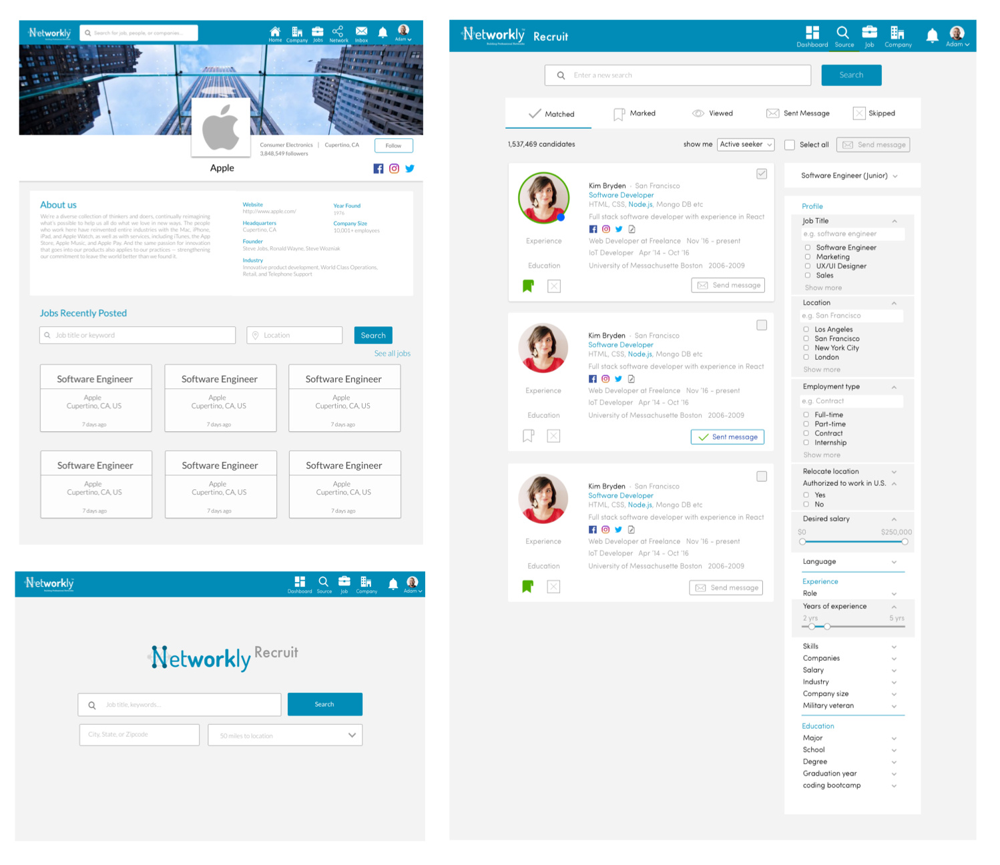

Networkly is a professional social networking site for professionals able to connect and network with other professionals to join and use for furthering their career and making connections with other professionals or finding employment.
“Our purpose is to build an online platform for professionals to network and connect with other professional and be able to message them and build a relationship that helps boost one’s career. This community of professionals will be useful for people to build an online professional profile."